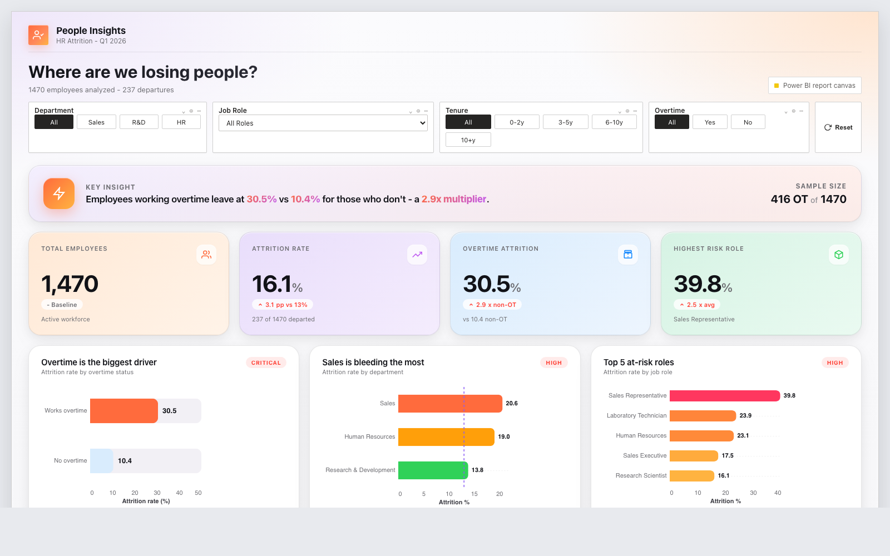
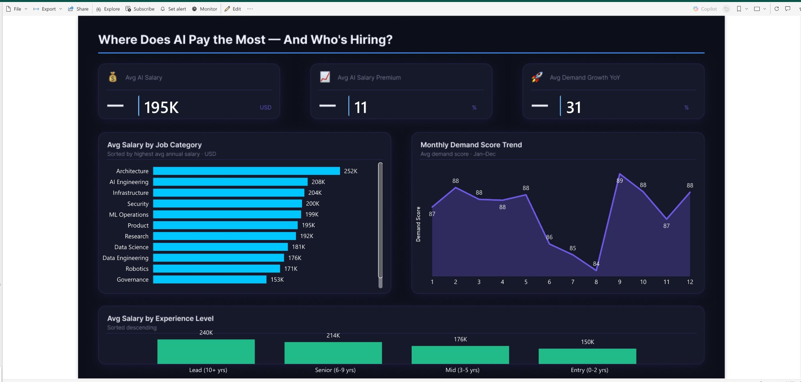

This portfolio documents how I use AI agents as a project team to learn, build, and publish analytics work: from raw datasets to strategy, profiling, dashboard design, Power BI builds, QA checks, and GitHub case studies.

HR Attrition DashboardA 6-agent AI workflow turned 1,470 employee records into a verified Power BI case study: strategy, profiling, design, Deneb build, QA, and GitHub publishing.

AI Jobs Market DashboardA 3-agent AI workflow created the first dashboard case study: design, build, and QA agents turned labour-market data into a verified Power BI portfolio page.
Each dashboard follows the same AI-agent workflow: a strategist picks the KPIs, a profiler audits data quality, a designer selects the three most surprising insights, a builder writes the Vega-Lite and DAX, a QA verifier recalculates every number from the raw CSV, and a publisher turns the result into a case study.
To keep future projects consistent, I reuse the same card structure: project tag, project title, one AI-process summary, three proof stats, and two links. My role is to guide the project, review each handoff, complete the Power BI finish, and decide what story is strong enough to publish.